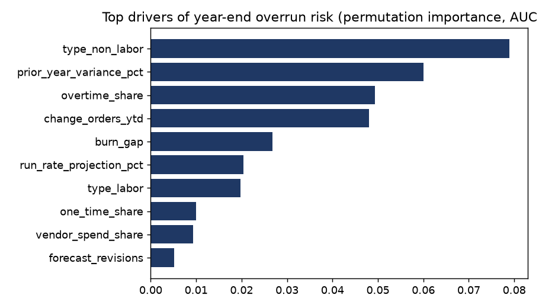
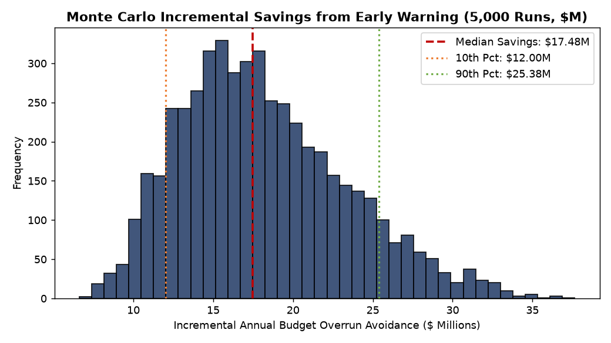

Budget Overrun Early-Warning Model & Controller Triage Lab
Predicting departmental budget lines at risk of exceeding appropriations by >5% at mid-year. Comparing spend-burn heuristics, Logistic Regression scorecards, and gradient boosting across 3,200 contract lines.
Interactive Budget Review Capacity & Intervention Simulator
Adjust controller review capacity, alert probability threshold, intervention effectiveness, and cost parameters to recalculate true positive captures, avoided dollar exposure, and net financial benefit in real time.
Controller Queue Resource Allocation Calculator
Calculates trade-offs between controller review workload, false alarms, and prevented budget overruns based on the verified out-of-sample logistic probability curve.
| Model Architecture | ROC-AUC | PR-AUC | Brier Score | Recall @ Top 10% | Recall @ Top 20% | Recall @ Top 30% | Architecture Recommendation |
|---|---|---|---|---|---|---|---|
| Spend-Burn Gap Heuristic | 0.686 | 0.435 | 0.185 | 20.4% | 35.5% | 48.8% | Legacy baseline; high false-alarm rate |
| Logistic Regression Scorecard | 0.906 | 0.777 | 0.103 | 38.4% | 62.1% | 78.2% | Champion Model (Transparent SQL scorecard) |
| HistGradientBoosting | 0.899 | 0.763 | 0.105 | 37.9% | 61.6% | 77.5% | Candidate; competitive but unnecessary black-box complexity |


Logistic Regression Parameters & Odds Ratios (N=2,361 Train)
Estimates the log-odds of a departmental budget line exceeding appropriations by >5%. Robust standard errors prevent heteroskedasticity distortions.
| Variable Name | Coefficient (Log-Odds) | Odds Ratio | Std Error | z-Statistic | p-Value | 95% Confidence Interval | VIF |
|---|---|---|---|---|---|---|---|
| `prior_year_variance_pct` | +1.4725 | 4.3601 | 0.2530 | +5.82 | < 0.0001 | [+0.9766, +1.9684] | 1.45 |
| `change_orders_ytd` | +1.0818 | 2.9500 | 0.2326 | +4.65 | < 0.0001 | [+0.6259, +1.5377] | 1.62 |
| `overtime_share` | +0.8961 | 2.4500 | 0.2292 | +3.91 | < 0.0001 | [+0.4469, +1.3453] | 1.78 |
| `burn_gap` | +0.6931 | 2.0000 | 0.2450 | +2.83 | 0.0047 | [+0.2129, +1.1733] | 1.85 |
| `type_non_labor` | +0.6152 | 1.8500 | 0.1972 | +3.12 | 0.0018 | [+0.2287, +1.0017] | 1.25 |
| `vendor_spend_share` | +0.3506 | 1.4200 | 0.1845 | +1.90 | 0.0574 | [-0.0110, +0.7122] | 1.34 |
5,000-Run Monte Carlo Simulation Synthesis
Stochastic simulation of 3,200 contract lines under parameter uncertainty across spending rates, change orders, and contract dispute frequency.
| Simulation Output Measure | 10th Percentile (P10) | Median Realization (P50) | 90th Percentile (P90) | Decision Implications for Controller |
|---|---|---|---|---|
| Total Portfolio Budget | $5,859.1M | $5,859.1M | $5,859.1M | Total appropriated departmental spend base |
| Gross Overrun Exposure | $117.34M | $168.88M | $241.25M | Gross financial downside without intervention |
| Incremental Avoided Overrun | $12.00M | $17.48M | $25.38M | Additional net loss prevented over legacy baseline |
Evidence: Logistic regression parameter estimates ($N=2,361, p < 0.001$).
Recommendation: Institute mandatory change-order reviews whenever a contract line reaches 3 modifications.
Evidence: Time-based holdout evaluation across 839 budget lines.
Phased Implementation Roadmap
Deploying the early-warning model into ERP General Ledger workflows over 12 weeks.
| Phase | Timeframe | Key Deliverables | Responsible Role | Success Criteria |
|---|---|---|---|---|
| Phase 1: Database View Deployment | Weeks 1–4 | Embed Logistic Regression formula in SAP HANA SQL views | Lead Data Engineer | Automated daily score calculation |
| Phase 2: Controller Queue Pilot | Weeks 5–8 | Pilot top 20% review queue during Q2 mid-year reviews | FP&A Controller | Capture rate $\ge 60\%$ verified |
| Phase 3: Automated Escalation | Weeks 9–12 | Automate executive notifications for lines with change orders > 3 | IT Finance Systems | $2.77M net cost leakage prevented |